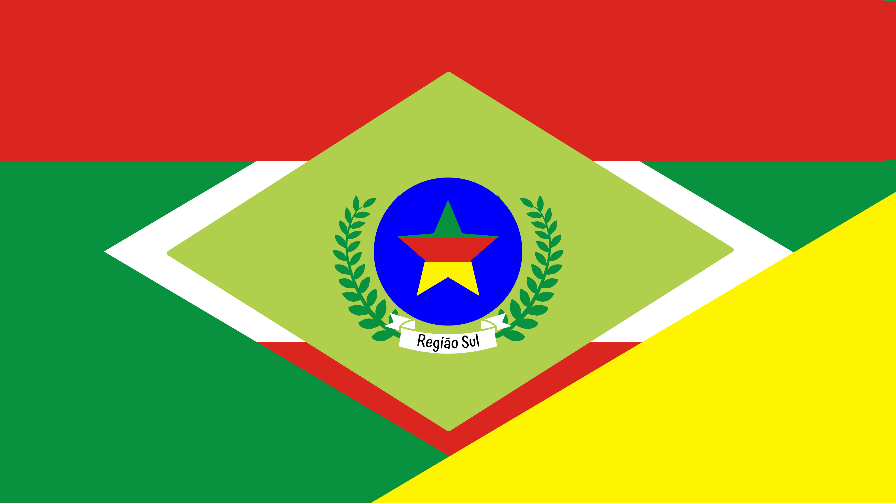
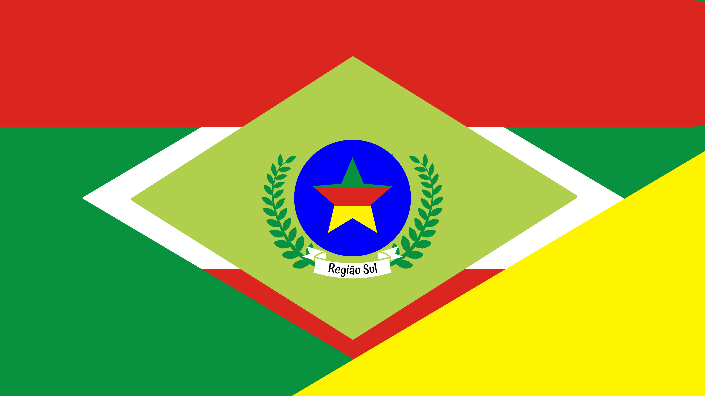

Características gerais
Como sabemos ou deveríamos saber, a região sul é a mais fria do Brasil, seu clima, mais especificamente, é o subtropical. A região é a menor das cinco que constituem o Brasil, tendo 576.407 km². É formada por três estados, ou unidades federativas: Rio Grande do Sul, Santa Catarina e Paraná. Sua vegetação é composta principalmente por mata atlântica, matas de araucárias e matas ciliares (matas ao redor dos rios). Suas formações de relevo são planícies, depressões, com planaltos meridionais e atlântico.
Bandeira e Mascote
Na nossa bandeira resolvemos mesclar as três bandeiras dos estado que formam a região sul, usamos as cores e símbolos presentes em todas elas para formá-la. Já para o mascote decidimos pegar um animal típico da região, escolhemos o cavalo, animal utilizado em campeonatos e esportes, tbm tem pessoas que gostam de andar a cavalo simplesmente por hobby. Juntamente do cavalo colocamos dois elementos muito característicos do sul do país, o chapéu de gaúcho e o chimarrão.
 

Aspectos individuais
Rio Grande do Sul
O Rio Grande do Sul está localizado no extremo sul do Brasil. É formado por 497 municípios e sua área total é de 281.707,15 km², incluindo as áreas das Lagunas dos Patos e Mirim. Com uma população de 11.422.973 habitantes, aproximadamente 5,4% da população brasileira, é o sexto estado mais populoso do Brasil.A sua produção econômica também se destaca, com 6,5% do Produto Interno Bruto nacional em 2018, colocando o Estado em 4º lugar entre os estados da Federação. O PIB per capita situa-se próximo a 37 mil reais/ano.
Santa Catarina
Santa Catarina é um estado brasileiro pertencente à Região Sul, fazendo fronteira com Paraná, Rio Grande do Sul e Argentina. Sua capital, Florianópolis, fica no litoral e consiste no segundo município mais populoso do estado. A população total catarinense é hoje de 7,2 milhões de habitantes. O território catarinense possui uma área de aproximadamente 95,4 mil km², fazendo do estado o menor da região sul em extensão territorial.
Paraná
O Paraná é um estado brasileiro localizado no sul do país com uma área de 199.314 km², o que significa 2,3% da superfície total do Brasil, e contém 399 municípios. Em 2018, o estado contava com uma população de 11,3 milhões de habitantes. A população é formada principalmente por descendentes de imigrantes europeus e asiáticos que se uniram aos índios, aos descendentes de portugueses e aos negros. A capital do estado é Curitiba.